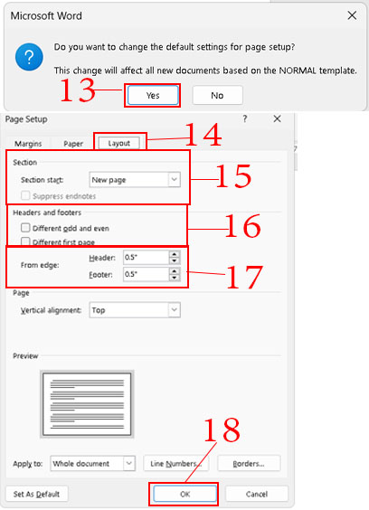

7.การตั้งค่าหน้ากระดาษ (Page Setup)
เมื่อเปิดหน้าต่างโปรแกรม Microsoft Word หรือรุ่นอื่น ๆ โปรแกรมมักจะตั้งหน้ากระดาษ A4 วางแนวตั้งให้อัตโนมัติ ก่อนจะพิมพ์งานเอกสารควรกำหนดขนาดของเอกสารให้ตรงกับขนาดของขนาดที่ต้องการใช้งาน เช่น งานที่ต้องการนั้น
ใช้กระดาษขนาด A4 หรือขนาด Legal (กระดาษยาว) และควรเว้นระยะขอบกระดาษเท่าไร เป็นต้น ซึ่งสามารถจัดหน้ากระดาษใหม่ได้ ดังนี้
1.คลิกแท็บ Layout (เค้าโครง)
2.คลิกปุ่ม Margin (ระยะขอบ)
3.คลิกเลือกระยะขอบแบบ Normal (ปกติ) เพื่อตั้งระยะขอบขนาด 1 นิ้ว หรือเลือกแบบอื่นก็ได้
4.คลิกที่ Custom Margins...(ระยะขอบแบบกำหนดเอง) หรือ
5.คลิกปุ่มลูกศรด้านล่างขวาของ Page Setup (ตั้งค่าหน้ากระดาษ)
6.ปรากฏหน้าต่าง Page Setup (ตั้งค่าหน้ากระดาษ)
7.ตั้งค่า Margins (ระยะขอบ)สำหรับพิมพ์แบบรายงาน เผื่อเย็บมุมกระดาษด้านซ้าย คลิกวาง Cursor ที่ช่อง Left:(ซ้าย) พิมพ์ตัวเลขที่ต้องการ เช่น 1.25"
8.ตั้งค่า Orientation (การวางแนว) เลือก Portrait (แนวตั้ง) หรือ Landscape (แนวนอน)
9.คลิกแท็บ Paper (กระดาษ)
10.ตั้งค่า Paper size:(ขนาดกระดาษ A4 (สำหรับรายงานหรือเอกสารทั่ว ๆไปใช้ A4)
11.ตั้งค่า paper source(แหล่งกระดาษ)สำหรับหน้าแรกและหน้าอื่น ๆ โดยกำหนดถาดใส่กระดาษที่ใช้พิมพ์
12.คลิกปุ่ม Set As Default (ตั้งเป็นค่าเริ่มต้น)(ทุกครั้งที่พิมพ์เอกสาร ค่าเริ่มต้นของหน้ากระดาษจะอยู่ที่ A4 และระยะขอบเดิมที่ตั้งไว้ จนกว่าจะเปลี่ยนค่าใหม่)
 |
13.ปรากฏหน้าต่างถามว่าจะเปลี่ยนค่าเริ่มต้นของหน้ากระดาษ
หรือไม่ให้คลิกที่ปุ่ม Yes (เพื่อตั้งเป็นค่าเริ่มต้น)
14.คลิกแท็บ Layout (เค้าโครง)
15.ตั้งค่า Section (ส่วนที่ต้องการแสดงผล) Section Start:New Page (เริ่มที่ส่วน-หน้าใหม่)
16.ตั้งค่า Headers And Footers (หัวกระดาษและท้ายกระดาษ)คลิก Different First Page คือ หน้าแรกต่างกัน
17.ตั้งค่า From edge:(ระยะของข้อความที่ห่างจากขอบหัว
กระดาษและท้ายกระดาษ) 0.5" หรือกำหนดตามต้องการ
18.คลิกปุ่ม OK (ตกลง)
|
|